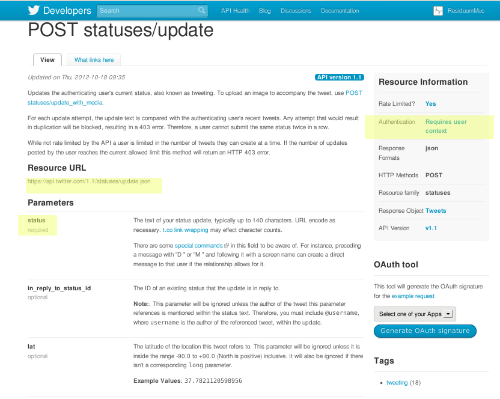

This tutorial will show you, how you can create your own Twitter client for Pd. You will learn how to use PuREST JSON for OAuth authentication, and you will be able to apply the methodology to create clients for other webservices.
In the examples folder, you can find the patch twitter-client.pd. You will only need to fill in your credentials, that you will get with the patch itself.
With OAuth, a user can give an application (here: Puredata) access to a webservice (here: Twitter) without giving the application your login to the service.
To do so, the application needs its own token and secret (client credentials, consumer key and consumer secret), as well as the user's (token credentials, access token and access token secret). The token credentials are different to the login name and password for the service.
As the token credentials are different from login name and password, the webservice and / or user can restrict the application, so that it may only perform certain actions, but not all (e.g. only read access, not showing sensitive informations).
When the application has both tokens and secrets, it needs to sign each request to the service with these.
Most of these is done under the hood of [oauth]. What you will learn in this tutorial, is how to get your application token and secret, the user's token and secret, and how to read developer documentation. The latter skill is important for creating your own clients for other services.
Caveat! This document makes some assumptions, which were true at the time of writing (October 2012): My client credentials are still valid, despite me giving it away in the example patch. Twitter have not changed their API, or the API is still supported.
All information about the Twitter API can be found at https://dev.twitter.com/.
For this tutorial, we will use PuREST JSON as a registered application. This application has both read and write access. If you want to reliably use Pd as a Twitter client, and / or want to restrict your client to read access only, you will need to register your client.
Login at https://dev.twitter.com/ with your Twitter login. Click on the create your application and create your application. Leave the field Callback URL empty.
After registering your application, you get your consumer key and secret. These are needed for any communication with twitter.
On that page, you can also create your own access token and access token secret.
You may skip this step, if you created your own access token and access token secret at the Twitter website.
Initialize [oauth] with the base URL, consumer key, and consumer secret (the leftmost instance of [oauth] already uses the PuREST JSON credentials).
Use [POST /oauth/request_token( method at [oauth]. [oauth] will issue a request to https://api.twitter.com/oauth/request_token and sign the request with the consumer credentials.
In your Pd console, you will hopefully get something similar to this:
data1: symbol oauth_token=(YOUR_TEMP_TOKEN)&oauth_token_secret=(YOUR_TEMP_TOKEN_SECRET)&oauth_callback_confirmed=true status1: list oauth bang
Now we have an temporary access token / secret pair. With this pair, we need to tell our user (YOU!) to go to Twitter and get a PIN to generate the real access token / secret pair.
Open a web browser and go to https://api.twitter.com/oauth/authorize?oauth_token=(YOUR_TEMP_TOKEN)&oauth_token_secret=(YOUR_TEMP_TOKEN_SECRET)&oauth_callback_confirmed=true. This will get you to a website, where you can authorize PuREST JSON for using the Twitter API. After authorization, you will see YOUR_PIN in large friendly letters printed on a web page. We will need these for the next step.
Now you get a PIN. This PIN will enable you to create your access token and access token key.
First, we have to tell [oauth] to use your new oauth access token and credentials. To do so, we will need to use the temporary access token / secret pair for signing the next OAuth request. We can do this either by editing the creation values of [oauth] or by sending a [url BASE_URL CONSUMER_KEY CONSUMER_SECRET YOUR_TEMP_TOKEN YOUR_TEMP_TOKEN_SECRET( to it. Use your return values from before.
Now send the PIN to Twitter to finally generate the read access token / secret pair. Use [POST access_token oauth_identifier=YOUR_PIN( for [oauth] to do so.
Hopefully, you get a message similar to this in your Pd console:
data1: symbol oauth_token=(YOUR_ACCESS_TOKEN)&oauth_token_secret=(YOUR_ACCESS_TOKEN_SECRET)&user_id=(YOUR_USER_ID)&screen_name=(YOUR_TWITTER_SCREEN_NAME)
You will need to tell [oauth] to use a) consumer key / secret pair and b) access token / secret pair. To do so, either set these (with the base url for all requests) in the creation arguments, or send these to it with the [url( message. Do this with the right instance of [oauth].
Now, get your home timeline by issuing [/1.1/statuses/home_timeline.json( to [oauth]. Does your timeline appear in the Pd console? Great! Now tweet, search, do whatever the API allows.
Consumer key and secret as well as access token and secret are sensitive data. Anybody getting the consumer key / secret pair in their hands can pose as that application to the webservice. Likewise, anybody getting their hand on the access token / secret pair can use the webservice with the provided accessibilty.
That means, if you send your OAuth request to the wrong webservice provider, you will get a 404 error back - in the best of all cases.
In the worst case, the wrong webservice provider is malicious and guesses, that you wanted to use Twitter and use your credentials to pose a your application with your access credentials.
Now, if you set base URL to http://example.com and issue a [GET http://example.org/test(, [oauth] will perform a GET request to http://example.comhttp://example.org/test, something not existant.
This section assumes, that you are not a professional programmer or do not have much experience in reading API reference documents.
Now, that we have a functional Twitter client, what are the possibilities? And how can I get information on how to use OAuth with other webservices?
Well, first go to the documentation from Twitter themselves. All you need to know is there.
OK, just joking. As this library is called PuREST JSON and [oauth] is used for OAuth signed RESTful requests, we need to read the REST API documention "only".
Take the documentation for any method, e.g. GET statuses/mentions_timeline.
On the right side, you see a section "Resource Information", which contains "Authentication: Requires user context" as a link.
So, we click on that link, and go to a page that tells us about OAuth authentication. We will need to use OAuth, so there is the link "Using OAuth" that gets us to another overview page. We will need to get an access token, which leeds us to this wonderful selection page.
What do we want to do? We have a (kind of) desktop app, that can't access a browser, so we will need to use ... PIN-based authorization. And now, all the steps are linked from there.
OK, now that we have found our method to call, we need to know how to do our call.
Let's say, you want to tweet from Pd and have already found the method POST statuses/update.

The important parts are marked with yellow by me. On the bottom of the page you can see examples, that tell you how to use the method.
That's all there is, there's no magic in it.
Author: Thomas Mayer
Copyright (c) 2012 Thomas Mayer
Permission is hereby granted, free of charge, to any person obtaining a copy of this software and associated documentation files (the "Software"), to deal in the Software without restriction, including without limitation the rights to use, copy, modify, merge, publish, distribute, sublicense, and/or sell copies of the Software, and to permit persons to whom the Software is furnished to do so, subject to the following conditions:
The above copyright notice and this permission notice shall be included in all copies or substantial portions of the Software.
THE SOFTWARE IS PROVIDED "AS IS", WITHOUT WARRANTY OF ANY KIND, EXPRESS OR IMPLIED, INCLUDING BUT NOT LIMITED TO THE WARRANTIES OF MERCHANTABILITY, FITNESS FOR A PARTICULAR PURPOSE AND NONINFRINGEMENT. IN NO EVENT SHALL THE AUTHORS OR COPYRIGHT HOLDERS BE LIABLE FOR ANY CLAIM, DAMAGES OR OTHER LIABILITY, WHETHER IN AN ACTION OF CONTRACT, TORT OR OTHERWISE, ARISING FROM, OUT OF OR IN CONNECTION WITH THE SOFTWARE OR THE USE OR OTHER DEALINGS IN THE SOFTWARE.